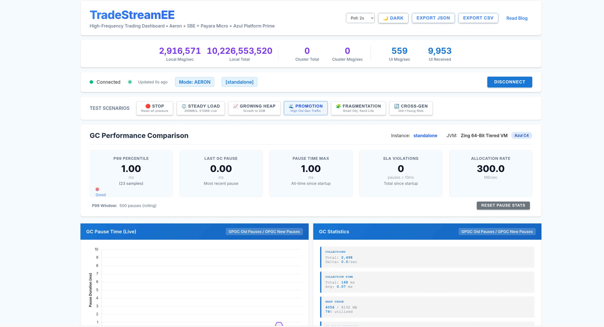

Results — Measured C4 vs G1 behavior under 12 workload types
6
Deployment & Demo — Docker, monitoring, live walkthrough
7
Conclusion — Key takeaways and lessons learned
01
The Problem
Why GC pauses matter in financial systems
The Financial Latency Budget
Every Microsecond Counts
HFT Reality
50,000-100,000+ messages/second
Latency budgets measured in microseconds
Single 50ms pause = missed trades
Unpredictable latency = SLA violations
Price moves in milliseconds
The Cost
At 10K trades/sec, a 100ms pause delays 1,000 trades
Delayed trades execute at worse prices
Regulatory requirements for audit trails
Market makers risk adverse selection
Compounding losses over a trading day
Question: Can Java, with its managed memory model, compete in this environment?
Why Java for Trading?
Despite the GC Challenge
Ecosystem
Massive library ecosystem
Proven in exchanges worldwide
Strong type safety
Excellent tooling
Talent
Largest developer pool
Financial domain expertise
Enterprise culture fit
Regulatory compliance tools
Performance
JIT-compiled to native
Escape analysis
Off-heap / direct buffers
With C4: sub-ms pauses
The challenge isn't Java itself. It's the garbage collector you choose. With the right runtime, Java matches or beats C++ for trading latency.
Garbage Collection Fundamentals
Term
Definition
Young Generation
Where new objects are allocated. Collected frequently, typically via copying collector.
Old Generation
Where long-lived objects reside after surviving multiple young GC cycles.
Promotion
Moving objects from young to old generation when they survive enough GC cycles.
Live Set
Total reachable objects at any point. Larger live set = more GC work.
Stop-the-World (STW)
All application threads halt while the GC performs work. No progress is made.
Concurrent Collection
GC runs alongside application threads. Application never pauses for collection.
Remembered Set
Data structure tracking old-to-young generation references. Scanned during young GC.
Write Barrier
Code executed on every reference field write. Updates card tables / remembered sets.
G1GC: The Default Collector
How It Works
Design Goals
Target pause time (default: 200ms)
Heap divided into regions (~2048)
Generational: young + old regions
Concurrent marking phase
Mixed collections for old gen
The Catch
Young GC: STW, copies live objects
Mixed GC: STW, evacuates old regions
Full GC: STW, compacts entire heap
All collections pause the application
Pause time scales with live set size
G1 is an excellent general-purpose collector. It balances throughput and pause times for most applications. But for latency-sensitive financial workloads, the STW pauses are a fundamental architectural constraint.
G1GC: Execution Timeline
Stop-the-World Pauses
Application Thread View
App
STW
App
STW
App
MIXED
App
STW
App
Application threads halt during red blocks. Each pause is unpredictable in duration.
GC Thread View (Concurrent Phases)
Initial Mark
...
Concurrent Mark
...
Remark (STW)
...
Cleanup (STW)
Concurrent phases reduce but do not eliminate STW pauses. Mark and Cleanup have STW components.
G1's Architectural Limitations
Why STW Is Unavoidable
Mixed Collections
Must trace entire live set
Pause scales with heap size
2 GB heap: 50-100 ms
4 GB heap: 100-200 ms
Remembered Sets
Track old-to-young refs
Write barrier on every pointer update
Scanned during every young GC
Overhead proportional to cross-refs
Compaction
Fragmentation triggers compaction
Full compaction requires Full GC
Small objects = more fragmentation
No concurrent compaction in G1
Key Point: These are architectural constraints, not tuning problems. No amount of JVM flag adjustment eliminates them.
Azul C4 (Continuously Concurrent Compacting)
Concurrent by Design
Loaded Value Barrier (LVB)
Intercepts every reference load
Self-healing: fixes references in-place
Enables concurrent compaction
Performs NMT check + page protection check
Dramatically reduced trigger frequency
Simultaneous-Generational Concurrency
Has young and old generations
Both collected concurrently and simultaneously
No STW for generational collection
Filtered write barrier (SVB) for card marks
Interlocks for cross-generational synchronization
Result: Sub-millisecond GC pauses regardless of heap size, live set size, or allocation rate.
C4 = algorithm name · GPGC = collector name in JMX · Includes sub-ms safepoints at phase changes
C4: Execution Timeline
Effectively Continuous Application Execution
Application Thread View
Application runs continuously - sub-ms safepoints at phase changes
Near-flat latency profile. Global safepoints at phase changes are independent of heap size and measure in sub-milliseconds.
GC Thread View (Fully Concurrent)
Mark
...
Relocate
...
Remap
All phases run concurrently with application threads. The LVB handles object forwarding transparently. Sub-ms safepoints occur at phase change boundaries.
G1 vs C4: Head to Head
Aspect
G1GC (HotSpot)
C4/GPGC (Azul Prime)
Collection Type
Mostly STW (young, mixed, full)
Fully concurrent (simultaneous gen)
Pause Mechanism
All application threads halt
Sub-ms safepoints at phase changes
Compaction
STW only (Full GC for full compaction)
Concurrent (always compacted)
Remembered Sets
Yes (write barrier + card table, STW scan)
Yes (filtered SVB, concurrent scan)
Pause vs Heap Size
Grows with live set
Constant (sub-ms)
Pause vs Allocation Rate
More allocation = more frequent pauses
No impact
Tuning Required
Yes (region sizes, pause targets, IHOP)
No (self-tuning)
Typical Max Pause
50-200ms under stress
< 1ms (phase change safepoints)
02
Architecture
Zero-copy pipeline design with Jakarta EE
What is TradeStreamEE?
A GC Benchmarking Platform Disguised as an HFT Dashboard
What It Does
Generates synthetic market data at HFT rates
Pushes data through a realistic Aeron/SBE pipeline
Price-time priority order matching engine
Risk engine (VaR, stress scenarios, position limits)
Portfolio management with performance metrics
Technical analysis via ta4j (SMA, EMA, RSI, MACD, Bollinger, ATR)
Distributes to browsers via WebSocket
Monitors GC pauses in real time
Compares C4 vs G1 side-by-side
What It Measures
GC pause times (p50/p95/p99/p999/max)
SLA violations by threshold
Allocation rates and live set sizes
WebSocket broadcast latency
Business impact (missed trades, revenue at risk)
Value-at-Risk (parametric, historical, Monte Carlo)
Sharpe ratio, max drawdown, portfolio returns
The "trading" domain provides realistic allocation patterns for GC stress testing. Includes an order matching engine, risk engine, portfolio manager, and technical analysis layer to exercise the JVM with production-like object lifetimes and allocation rates.
System Architecture
Zero-Copy Pipeline for Market Data
PublisherMarket Data
→
SBE EncodeUnsafeBuffer
→
Aeron IPCShared Mem
→
HandlerSBE Decode
→
HazelcastCluster Topic
→
WebSocketBrowser
Ingestion Layer
Aeron IPC: Kernel bypass, shared memory
SBE: Flyweight pattern, zero allocation
DirectByteBuffer: Off-heap memory
Sub-microsecond transport latency
Distribution Layer
Hazelcast ITopic: Cluster-wide pub/sub
WebSocket: Async push to browsers
JFR Events: Custom domain profiling
JMX: GC pause notifications
Aeron IPC: Zero-Copy Transport
Bypassing the Kernel
Traditional Messaging
TCP/IP socket calls
Kernel context switches
Buffer copies at each layer
Serialization/deserialization
Latency: 10-100+ microseconds
Aeron IPC
Memory-mapped shared files
Direct memory access
Zero-copy with SBE
No kernel involvement
Transport latency: sub-microsecond
Aeron Configuration
Channel
aeron:ipc
Inter-process communication
Stream ID
1001
Logical stream identifier
Threading
SHARED
Single media driver thread
Idle Strategy
BackoffIdleStrategy
100 spins, 10 yields, 1-100us park
Fragment Limit
10
Messages polled per iteration
Simple Binary Encoding (SBE)
Zero-Copy Binary Serialization
SBE Schema Design
Category
Count
Examples
Market Data
5
Trade, Quote, MarketDepth, OrderAck, Heartbeat
Order Book
6
OrderBookSnapshot, PriceLevel, OrderEntry
Orders
5
NewOrder, CancelOrder, OrderReject
Execution
4
ExecutionReport, TradeConfirm
Risk & Portfolio
8
VaRReport, PositionUpdate, ExposureSummary
Technical Analysis
6
IndicatorUpdate, BarSnapshot
System
14
HealthCheck, GCPauseEvent, SLAAlert
Total
48
Defined in market-data.xml, compiled to Java flyweight codecs at build time via SbeTool.
Key Properties
Flyweight pattern (no allocation)
Fixed-offset field access
Little-endian byte order
Prices as fixed-point int64 (x10,000)
Repeating groups for depth levels
Generated code, not reflection
SBE codecs wrap existing byte buffers. They read and write directly from/to memory without creating intermediate Java objects. The buffer is reused across messages.
SBE: Zero-Copy Message Processing
The Flyweight Pattern in Practice
// Reusable decoder instances - allocated once, never GC'd
private final TradeDecoder tradeDecoder = new TradeDecoder();
private final MessageHeaderDecoder headerDecoder = new MessageHeaderDecoder();
private final byte[] symbolBuffer = new byte[128]; // reused
private final StringBuilder sb = new StringBuilder(1024); // reused
@Override
public void onFragment(DirectBuffer buffer, int offset,
int length, Header header) {
// Wrap existing buffer - NO copy, NO allocation
headerDecoder.wrap(buffer, offset);
// Move decoder window over buffer - NO allocation
tradeDecoder.wrap(buffer,
offset + headerDecoder.encodedLength(),
headerDecoder.blockLength(),
headerDecoder.version());
// Read directly from buffer memory
final long timestamp = tradeDecoder.timestamp();
final long price = tradeDecoder.price();
final int quantity = tradeDecoder.quantity();
}
Decoders are views over byte buffers. No Java objects created during message processing. The symbolBuffer and jsonBuilder are reused across calls.
The Publisher: Burst Pattern
Simulating Realistic Market Conditions
// Burst: 500 iterations x (Trade + Quote + MarketDepth) = 1,500 messages
// Then 5-microsecond park, repeat
while (running) {
int burstMultiplier = getBurstMultiplier(); // time-based
int adjustedBurstSize = BASE_BURST_SIZE * burstMultiplier; // 500, 2500, or 1500
for (int i = 0; i < adjustedBurstSize; i++) {
publishTrade(); // SBE encode -> Aeron offer
publishQuote(); // SBE encode -> Aeron offer
publishMarketDepth(); // SBE encode -> Aeron offer
if (i % 100 == 0) publishHeartbeat();
}
LockSupport.parkNanos(5_000); // 5us backoff between bursts
}
// Burst multiplier based on time-of-minute simulation
private int getBurstMultiplier() {
long second = (System.currentTimeMillis() / 1000) % 60;
if (second >= 20 && second < 25) return 5; // News event
if (second >= 45 && second < 50) return 3; // Market close
return 1; // Normal trading
}
Dual-Mode Ingestion
AERON vs DIRECT: Controlled Comparison
Aspect
AERON Mode
DIRECT Mode
Encoding
SBE binary (zero-copy)
JSON strings (String.format)
Transport
Shared memory IPC
In-process method call
Allocation/Message
~0 bytes
~1KB+ (1KB padding added)
GC Pressure
Minimal
High (intentional)
Purpose
Production pipeline
GC stress baseline
// DIRECT mode: Intentional garbage generation
String json = String.format("{\"type\":\"trade\",\"timestamp\":%d," +
"\"tradeId\":%d,\"symbol\":\"%s\",\"price\":%.4f,\"quantity\":%d}",
System.currentTimeMillis(), tradeId, symbol, price, quantity);
// Add 1KB of padding per message to maximize GC stress
broadcaster.broadcastWithArtificialLoad(json);
CDI manages all lifecycle. @Observes @Initialized replaces ServletContextListener. Configuration via MicroProfile Config annotations.
Virtual Threads via Jakarta Concurrency 3.1
Massive Concurrency Without Platform Thread Pools
// Single annotation defines a virtual thread executor
@ApplicationScoped
@ManagedExecutorDefinition(
name = "java:module/concurrent/VirtualThreadExecutor",
virtual = true,
qualifiers = {VirtualThreadExecutor.class}
)
public class ConcurrencyConfig {}
// Custom qualifier for injection
@Qualifier
@Retention(RUNTIME)
@Target({METHOD, FIELD, PARAMETER, TYPE})
public @interface VirtualThreadExecutor {}
// Usage: inject and submit tasks
@Inject @VirtualThreadExecutor
private ManagedExecutorService managedExecutorService;
// Publisher runs on virtual thread - no platform thread consumed
publisherFuture = managedExecutorService.submit(() -> {
while (running) {
publishTrade(); publishQuote(); publishMarketDepth();
LockSupport.parkNanos(5_000);
}
});
All background tasks (publisher, subscriber polling, memory pressure generator, stats reporting) run on virtual threads. A single @ManagedExecutorDefinition replaces all thread pool configuration.
WebSocket: Real-Time Data Push
Four Endpoints for Market Data, Alerts, Executions, and Indicators
Endpoints
/market-data — Trade, quote, depth
/sla — GC pause violation alerts
/executions — Order match events
/indicators — Technical analysis updates
Key Properties
CDI injection works in WebSocket endpoints
1-in-50 sampling for market data at 50K+ msg/s
Execution events pushed via Hazelcast ITopic
SLA thresholds: 10ms warning, 50ms critical
@ServerEndpoint("/market-data")
public class MarketDataWebSocket {
@Inject private MarketDataBroadcaster broadcaster;
@OnOpen
public void onOpen(Session session) {
broadcaster.addSession(session);
session.getBasicRemote().sendText(
"{\"type\":\"info\",\"message\":\"Connected\"}");
}
@OnClose
public void onClose(Session session) {
broadcaster.removeSession(session);
}
}
// Execution events broadcast to cluster via Hazelcast ITopic
@ServerEndpoint("/executions")
public class ExecutionWebSocket {
@Inject private ExecutionBroadcaster broadcaster;
@OnOpen
public void onOpen(Session session) {
broadcaster.addSession(session);
}
}
Market data at /market-data. GC pause alerts at /sla. Match events at /executions. Indicator snapshots at /indicators.
JAX-RS REST API
Full Control Surface for Testing
System & Health
GET /api/status
GET /api/status/cluster
GET /api/health/check
GET /api/health/ready
GET /api/health/live
GC & Pressure Control
GET /api/gc/stats
GET /api/gc/pauses
GET /api/gc/sla
GET /api/gc/comparison
POST /api/pressure/mode/{mode}
GET /api/pressure/status
Business Impact
GET /api/business/impact
GET /api/business/config
POST /api/business/reset
Demo & JFR
GET /api/demo/presets
POST /api/demo/preset/{id}/start
POST /api/demo/execution/{id}/step/{n}
GET /api/jfr/status
POST /api/jfr/recording/start
GET /api/jfr/download/{file}
Matching & Orders
GET /api/matching/book/{symbol}
GET /api/matching/positions
GET /api/orders/{symbol}
POST /api/orders/submit
POST /api/orders/cancel/{id}
Analysis & Risk
GET /api/indicators/{symbol}
GET /api/portfolio/snapshot
POST /api/portfolio/rebalance
GET /api/risk/snapshot/{symbol}
GET /api/risk/var/{symbol}
POST /api/risk/stress
Hazelcast Clustering
Distributed Data with No External Infrastructure
What Hazelcast Provides
ITopic: Cluster-wide pub/sub for market data
IAtomicLong: CP subsystem for distributed counters
IMap: Distributed state for demo coordination
TCP/IP Discovery: Docker networking
Built into Payara Micro
How Broadcasting Works
public void broadcast(String json) {
if (clusterTopic != null) {
// Publish to cluster topic
clusterTopic.publish(json);
} else {
// Fallback: local only
broadcastLocal(json);
}
}
// Each cluster member receives
// via topic listener and pushes
// to its local WebSocket sessions
One node generates data (ENABLE_PUBLISHER=true), all nodes distribute to their WebSocket clients. Horizontal scaling with no message broker.
04
GC Stress Testing
12 adversarial workloads targeting G1 weaknesses
Why Scenario-Based Testing?
Generic Benchmarks Miss Real Behavior
Generic Benchmarks
Uniform allocation patterns
Don't model cross-generational refs
Miss promotion storms
Don't test fragmentation
Results don't match production
Targeted Scenarios
Each scenario targets one G1 weakness
Model realistic object lifetime patterns
Control allocation rate and live set
Reproduce deterministically
Expose real production behavior
Approach: Build the weakest case for G1, then measure how C4 handles the same load. If C4 survives scenarios designed to break G1, the conclusion is clear.
MemoryPressureService Architecture
The GC Stress Engine
@ApplicationScoped
public class MemoryPressureService {
@Inject @VirtualThreadExecutor
private ManagedExecutorService executorService;
@Inject private Instance<Workload> workloads;
private final Deque<byte[]> liveSet = new LinkedList<>();
private final ConcurrentLinkedDeque<byte[]> promotableObjects;
private final Deque<RefHolder> crossRefHolders = new LinkedList<>();
public void setAllocationMode(AllocationMode mode) {
currentMode = mode;
liveSet.clear();
promotableObjects.clear();
crossRefHolders.clear();
startPressure(); // launches virtual thread
}
// Dispatches to Workload implementations via CDI Instance
private void generateGarbage(AllocationMode mode) {
if (mode.getWorkloadType() != WorkloadType.NONE) {
Workload workload = resolveWorkload(mode.getWorkloadType());
workload.execute(iterations);
} else {
generateMemoryScenario(mode.getScenarioType());
}
}
}
Runs on a virtual thread. Memory scenarios use 4 parallel threads for allocation. CPU workloads dispatch to CDI-managed Workload implementations.
Memory Stress Scenarios
Five adversarial workloads targeting G1 weaknesses
Scenario
Allocation Rate
Live Set
G1 Weakness Targeted
STEADY_LOAD
200 MB/s
512 MB stable
Young GC pause frequency
INTRADAY_POSITION_GROWTH
150 MB/s
100 MB → 2 GB (60s)
Mixed collection pause scaling
EARNINGS_SPIKE
300 MB/s
1 GB (50% survival)
Old generation collection
MULTI_VENUE_QUOTE_CHURN
200 MB/s
1 GB fragmented
Compaction pauses
LONG_HORIZON_POSITION_BOOK
150 MB/s
800 MB old gen
Remembered set overhead
Each scenario uses 4 parallel virtual threads to mirror production multi-handler workloads. Memory scenarios defined in AllocationMode.java, CPU workloads via CDI Workload implementations.
CPU Workloads
Seven compute-intensive workloads that stress GC under realistic pressure
Workload
Allocation Rate
What It Stresses
COMPRESSION_CPU
300 MB/s
Gzip compress/decompress temp buffers
SERIALIZATION_CPU
250 MB/s
Jakarta JSON object graph materialization
CRYPTO_CPU
200 MB/s
SHA-256, HMAC-SHA256, AES-GCM encrypt/decrypt
COLLECTION_CPU
300 MB/s
HashMap/TreeMap insert/lookup/remove churn
STRING_CPU
350 MB/s
Regex, substring, StringBuilder, String.intern
TRADING_MATCHING
400 MB/s
Order/Execution object churn via matching engine
TECHNICAL_ANALYSIS
300 MB/s
ta4j indicator objects (SMA, EMA, RSI, MACD, BB, ATR)
Key insight: The last two workloads (TRADING_MATCHING and TECHNICAL_ANALYSIS) exercise real business logic from the matching engine and ta4j analysis library. They generate production-like allocation patterns from actual computation, not synthetic byte arrays.
LONG_HORIZON_POSITION_BOOK: Remembered Set Stress
The Killer Scenario for G1
// Old-generation holder object (~1MB each, will be promoted by GC)
private static class RefHolder {
volatile Object youngRef; // Updated frequently
final byte[] padding; // ~1MB ensures old gen residence
RefHolder(int size) {
this.padding = new byte[size];
ThreadLocalRandom.current().nextBytes(padding);
}
}
// Create young objects and update old-to-young references
// Every write triggers G1's post-write barrier:
// 1. Marks card table entry as dirty
// 2. Adds to remembered set for later scanning
private void createCrossGenRefsMultiThreaded(int bytes, int threads) {
RefHolder[] holders = crossRefHolders.toArray(new RefHolder[0]);
for (int t = 0; t < threads; t++) {
CompletableFuture.runAsync(() -> {
while (remaining > 0) {
byte[] youngObj = new byte[randomSize];
holders[randomIdx].youngRef = youngObj; // write barrier!
remaining -= size;
}
}, executorService); // virtual thread
}
}
G1: Every youngRef write triggers write barrier + remembered set update. Overhead grows with cross-refs. Remembered set scanned during STW pauses.
C4: Uses a filtered write barrier (SVB) for card marks, but scans them concurrently. No STW pause for remembered set scanning.
Scenario Implementation Details
How Each Scenario Generates Pressure
MULTI_VENUE_QUOTE_CHURN
// Random small objects create holes
private void allocateQuoteChurnGarbage(
int totalBytes, int threads) {
while (remaining > 0) {
int size = random(100, 1000);
byte[] garbage = new byte[size];
random.nextBytes(garbage);
remaining -= size;
// Short-lived quote updates die fast
// and fragment the free space
}
}
100-1000 byte quote updates create a Swiss cheese heap that triggers G1 compaction.
EARNINGS_SPIKE
// 50% of orders survive to old generation
private void executeEarningsSpike(
AllocationMode mode) {
int transient = bytes / 2;
int promotable = bytes / 2;
allocateTransientGarbage(transient, 4);
allocatePromotableGarbage(promotable, 4);
// Move promoted orders to live set
while ((obj = promotableObjects.poll()) != null)
liveSet.add(obj);
}
50% order survival floods old gen, forcing G1 into expensive mixed collections.
Demo Preset Orchestration
YAML-Driven Test Sequences
# demo-presets.yml - Each preset is a choreographed GC stress test
MARKET_OPEN_SPIKE:
name: "Market Open Spike"
description: "Simulates market opening with sudden allocation burst"
steps:
- mode: STEADY_LOAD
durationSeconds: 10
description: "Baseline - calm before the open"
- mode: EARNINGS_SPIKE
durationSeconds: 20
description: "Market open - sudden influx of orders"
- mode: STEADY_LOAD
durationSeconds: 10
description: "Post-open stabilization"
QUOTE_CHURN_HELL:
name: "Quote Churn Hell"
description: "Maximum quote churn to trigger compaction pauses"
steps:
- mode: MULTI_VENUE_QUOTE_CHURN
durationSeconds: 30
description: "Build up fragmented heap from short-lived quotes"
- mode: INTRADAY_POSITION_GROWTH
durationSeconds: 30
description: "Grow position book to force full compaction"
- mode: LONG_HORIZON_POSITION_BOOK
durationSeconds: 30
description: "Add remembered set pressure on top"
5 presets: Market Open Spike, Executive 30-Sec, Trading Day Stress, Fragmentation Hell, Full Day Simulation. Execution state stored in Hazelcast distributed map.
GC Pause Monitoring via JMX
Real-Time Observation Without Agents
@ApplicationScoped
public class GCPauseMonitor implements NotificationListener {
private final ConcurrentLinkedDeque<Long> pauseHistory;
private final AtomicLong violationsOver10ms = new AtomicLong(0);
private final AtomicLong violationsOver50ms = new AtomicLong(0);
private final AtomicLong violationsOver100ms = new AtomicLong(0);
@PostConstruct
public void init() {
for (GarbageCollectorMXBean gcBean :
ManagementFactory.getGarbageCollectorMXBeans()) {
if (gcBean instanceof NotificationEmitter emitter) {
emitter.addNotificationListener(this, null, null);
}
}
}
@Override
public void handleNotification(Notification n, Object handback) {
// Filter out C4's "GPGC" bean (reports concurrent cycle, not pause)
if ("GPGC".equals(gcName)) return;
long pauseMs = gcInfo.getDuration();
recordPause(pauseMs, gcName, gcAction);
// Broadcast SLA violation to WebSocket clients in real time
if (pauseMs > 10 && broadcaster != null) {
broadcaster.broadcast(SLAViolationEvent.create(pauseMs, threshold));
}
}
}
TradePublished event = new TradePublished();
if (event.isEnabled()) { // JIT-compiled check
event.symbol = symbol;
event.price = price;
event.quantity = quantity;
event.side = side;
event.commit();
}
// When not recording, the
// isEnabled() check is the
// only overhead
All events use @StackTrace(false) on hot paths.
Full JFR lifecycle management via REST API: start/stop recordings, download .jfr files, correlate application events with JDK GC events.
Same workload. G1: 20 SLA violations | C4: Zero violations | Total pause time: 15x difference
INTRADAY_POSITION_GROWTH: Position Book Scaling
100 MB → 2 GB over 60 Seconds
G1 Behavior
Young GC: 10-30 ms initially
Mixed GC starts at ~500 MB live set
Pause time grows with live set
At 2 GB: 100-200 ms pauses
Throughput degrades progressively
C4 Behavior
Pause time: 0-1 ms throughout
Both generations collected concurrently
Pause time independent of live set
At 2 GB: still < 1 ms
Consistent throughput throughout
G1's pause time scales with live set. C4's pause time is independent of live set because all collection phases run concurrently. This is the fundamental architectural difference.
Business Impact Analysis
GC Pauses in Financial Terms
1,000
Trades delayed per 100ms pause (at 10K trades/sec)
$25K
Revenue at risk per missed trade (configurable default)
40%
Infrastructure savings (3 C4 vs 5 G1 instances)
Predictable Latency
SLA compliance with C4 (sub-ms pauses)
No jitter during market events
Regulatory requirements met
Operational Simplicity
No GC tuning required with C4
Fewer performance engineers needed
Faster time to production
Results Summary
All Scenarios: C4 Wins Every Time
Metric
G1GC
C4/GPGC
Max Pause (EARNINGS_SPIKE)
25 ms
2 ms
Avg Pause (EARNINGS_SPIKE)
4.87 ms
0.078 ms
SLA Violations (>10ms)
20
0
Total Pause Time
799 ms
52 ms
Pause Scaling with Heap
Grows linearly
Constant
GC Tuning Required
Yes
No
Infrastructure Savings
Baseline (5 instances)
40% fewer (3 instances)
15x less total pause time. Zero SLA violations. No tuning needed.
06
Deployment & Demo
Running and monitoring the application
Deployment Options
Running TradeStreamEE
# Single instance - Azul C4 with Aeron pipeline
./start.sh azul-aeron
# Single instance - Standard JDK with DIRECT mode (GC stress)
./start.sh standard-direct
# Side-by-side comparison (C4 vs G1 clusters)
./start-comparison.sh all
# With Prometheus + Grafana monitoring
./start-comparison.sh all --monitoring
Single Instance
8 GB heap
Full throughput testing
AERON or DIRECT mode
Best for initial testing
Comparison Stack
C4 cluster: ports 8080-8083
G1 cluster: ports 9080-9083
Grafana dashboards included
Best for demos and evaluation
Docker Configuration
Multi-Stage Builds with JVM-Specific Tuning
C4 (azul/prime:21)
FROM azul/prime:21
# C4: no GC tuning flags needed
# Just set heap size
JAVA_OPTS="
-Xmx8g
-XX:MaxRAMPercentage=75.0
-XX:AlwaysPreTouch
-XX:+UseTransparentHugePages
-XX:+UseStringDeduplication
"
Note the difference: C4 requires no GC tuning flags beyond basic heap configuration. G1 requires region sizing, pause targets, IHOP, and reserve percentages, and still can't match C4's pause profile.
Monitoring Stack
Prometheus, Grafana, and JFR
Prometheus + Grafana
JMX Exporter on each instance
GC pause metrics, heap usage
Pre-configured Grafana dashboards
Side-by-side C4 vs G1 comparison
Historical data for analysis
JFR Recordings
Start/stop via REST API
10 custom event types
Correlate app events with GC
Download .jfr for JDK Mission Control
Zero overhead when disabled
# Start a JFR recording
curl -X POST http://localhost:8080/api/jfr/recording/start
# Download the recording for analysis
curl -O http://localhost:8080/api/jfr/download/recording-2026-03-25.jfr
# Open in JDK Mission Control for timeline analysis
Live Dashboard
Real-Time GC Visualization

WebSocket-connected dashboard: live message rates, GC pause percentiles, SLA violations, memory pressure controls, and demo preset launcher.
Stress Testing via API
Apply Scenarios and Measure Results
# 1. Check system health before starting
curl -s http://localhost:8080/api/health/check | jq
# 2. Reset GC statistics for clean measurement
curl -X POST http://localhost:8080/api/gc/reset
# 3. Apply the LONG_HORIZON_POSITION_BOOK scenario
curl -X POST http://localhost:8080/api/pressure/mode/LONG_HORIZON_POSITION_BOOK
# 4. Wait 30 seconds, then check GC statistics
sleep 30
curl -s http://localhost:8080/api/gc/stats | jq
# 5. Check business impact
curl -s http://localhost:8080/api/business/impact | jq
# 6. Stop the pressure generator
curl -X POST http://localhost:8080/api/pressure/mode/OFF
07
Conclusion
Key takeaways and lessons learned
Key Takeaways
G1's stop-the-world pauses are architectural - no tuning eliminates them
C4 collects concurrently - sub-millisecond safepoints at phase changes
G1 pause time scales with live set - larger heaps = longer pauses
C4 pause time is constant - independent of heap size or allocation rate
Remembered sets add hidden overhead - cross-gen refs trigger write barriers on every pointer update
Scenario-based testing exposes real behavior - generic benchmarks miss critical patterns
Jakarta EE is a valid platform for low-latency trading - with the right runtime
The application code stays simple - GC choice handles complexity without code changes
Lessons Learned
What Worked
SBE flyweight pattern eliminates allocation on the hot path
Aeron IPC provides true zero-copy transport
C4 requires zero tuning for consistent pauses
Scenario-based testing reveals behavior that generic benchmarks miss
Virtual threads simplify concurrency for background tasks
Hazelcast clustering embedded in Payara removes infrastructure complexity
Watch Out For
C4's JMX bean reports as "GPGC", not "C4" - must filter this correctly
WebSocket JSON conversion adds measurable latency to the pipeline
1-in-50 message sampling needed for UI stability under load
Docker shared memory sizing (tmpfs) for Aeron IPC requires attention
DIRECT mode's String.format is intentionally wasteful - don't use it as a performance reference
The biggest insight: The application code is identical between C4 and G1 deployments. The only difference is the JVM. The GC choice is a runtime decision, not an architectural one.
Technology Stack
Component
Technology
Version
Role
Runtime
Azul Platform Prime
21
C4/GPGC pauseless GC
Comparison
Eclipse Temurin
21
G1GC baseline
App Server
Payara Micro
7.2025.2
Jakarta EE 11 container
Jakarta EE
Jakarta EE
11.0.0
CDI, WebSocket, JAX-RS, Concurrency
Transport
Aeron
1.50.0
Shared memory IPC messaging
Encoding
SBE
1.34.0
Zero-copy binary serialization
Clustering
Hazelcast
5.5.0
Distributed topics + CP subsystem
Monitoring
Prometheus + Grafana
Latest
JMX metrics and dashboards
TA Library
ta4j-core
0.22.4
Technical analysis (SMA, EMA, RSI, MACD, BB, ATR)
Java
OpenJDK
21
Records, Pattern Matching, Virtual Threads
Resources
TradeStreamEE
GitHub:github.com/pedanticdev/trader-stream-ee
Full source code, Dockerfiles, compose files
12 GC stress workloads (5 memory + 7 CPU)
Order matching engine, risk engine, portfolio manager